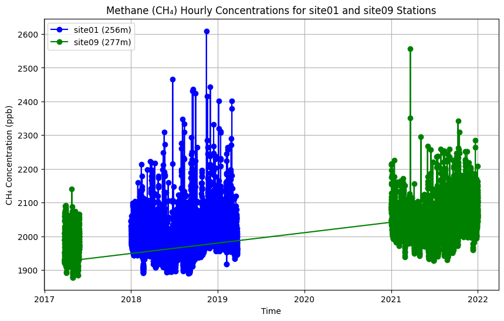

import requests
import pandas as pd
import matplotlib.pyplot as plt
from io import StringIOIndianapolis Flux Experiment CO₂ and CH₄ Concentrations
Atmospheric concentration measurements from Indianapolis Flux Experiment (INFLUX) tower sites.
Access this Notebook
You can launch this notebook in the US GHG Center JupyterHub (requires access) by clicking the following link: Indianapolis Flux Experiment CO₂ and CH₄ Concentrations. If you are a new user, you should first sign up for the hub by filling out this request form and providing the required information.
If you do not have a US GHG Center Jupyterhub account, you can access this notebook through MyBinder by clicking the button below.

Table of Contents
Data Summary and Application
- Spatial coverage: Indianapolis, Indiana, United States
- Spatial resolution: Point location samples
- Temporal extent: January 1, 2011 - December 31, 2024
- Temporal resolution: Hourly averages
- Units: Micromoles per mole of dry air (Parts CO₂ per million (ppm)); Nanomoles per mole of dry air (Parts CH₄ per billion (ppb))
- Utility: Climate Research
For more information, visit the Indianapolis Flux Experiment CO₂ and CH₄ Concentrations data overview page.
Approach
- Identify available dates and temporal frequency of observations for the given data. The collection processed in this notebook is the Indianapolis Flux Experiment CO₂ and CH₄ Concentrations dataset.
- Create a time-series analysis.
About the Data
NIST is engaged in research to improve measurement of greenhouse gas emissions in areas containing multiple emission sources and sinks, such as cities. NIST’s objective is to develop measurement tools supporting independent means to increase the accuracy of greenhouse gas emissions data at urban and regional geospatial scales. NIST has established three test beds in U.S. cities to develop and evaluate the performance of advanced measurement capabilities for emissions independent of their origin. Located in Indianapolis, Indiana, the Los Angeles air basin of California, and the U.S. Northeast corridor (beginning with the Baltimore/Washington D.C. region), the test beds have been selected for their varying meteorology, terrain and emissions characteristics. These test beds will serve as a means to independently diagnose the accuracy of emissions data obtained directly from emission or uptake sources.
For more information regarding this dataset, please visit the Indianapolis Flux Experiment CO₂ and CH₄ Concentrations data overview page.
Terminology
Navigating data via the US Greenhouse Gas Center (GHGC) Application Programming Interface (API), you will encounter terminology that is different from browsing in a typical filesystem. We’ll define some terms here which are used throughout this notebook.
collection: A specific dataset, e.g. Indianapolis Flux Experiment CO₂ and CH₄ Concentrationsitem: One file (i.e. granule) in the dataset, e.g. a file containing hourly CO₂ concentrations for a specific site
Install the Required Libraries
Required libraries are pre-installed on the US GHG Center Hub. If you need to run this notebook elsewhere, please install them with this line in a code cell:
%pip install requests folium rasterstats pystac_client pandas matplotlib –quiet
Querying the Feature Vector API
First, we are going to fetch the data using the US GHG Center Feature Vector Application Programming Interface (API). The provided endpoints refer to a location within the API that execute a request on a data files nesting on the server.
FEATURE_API_URL="https://earth.gov/ghgcenter/api/features"# Function to fetch CSV data for a station with a limit parameter
def get_station_data_csv(station_code, gas_type, frequency, elevation_m, limit=100000):
# Use the ?f=csv and limit query to get more rows
url = f"https://earth.gov/ghgcenter/api/features/collections/public.nist_flux_in_{station_code}_{gas_type}_{frequency}_concentrations/items?f=csv&elevation_m={elevation_m}&limit={limit}"
print(url)
try:
response = requests.get(url)
# Check if the response is successful
if response.status_code != 200:
print(f"Failed to fetch data for {station_code}. Status code: {response.status_code}")
return pd.DataFrame()
# Check if the content type is CSV
content_type = response.headers.get('Content-Type')
if 'text/csv' not in content_type:
print(f"Unexpected content type for {station_code}: {content_type}")
print("Response content:", response.text)
return pd.DataFrame()
# Read the CSV content into a pandas DataFrame
csv_data = StringIO(response.text)
return pd.read_csv(csv_data)
except requests.exceptions.RequestException as e:
print(f"Request failed: {e}")
return pd.DataFrame()Time-Series Analysis
In the next cell, we’ll plot hourly CH₄ concentrations for two INFLUX sites from 2015 through 2022. “site01” is the “Background Southwest1” station in Mooresville, IN and “site09” is the “Background East” station in Maxwell, IN.
# Get station name and elevation from metdata dataframe
# Fetch data for site01 (elevation 256) and site09 (elevation 277), using limit=10000
# ch4/co2 select the ghg
site01_data = get_station_data_csv('site01', 'ch4', 'hourly', 256,limit=10000)
site09_data = get_station_data_csv('site09', 'ch4', 'hourly', 277,limit=10000)
# Check if data was successfully retrieved before proceeding
if site01_data.empty or site09_data.empty:
print("No data available for one or both stations. Exiting.")
else:
# Convert the 'datetime' column to datetime for plotting
site01_data['datetime'] = pd.to_datetime(site01_data['datetime'], format='%Y-%m-%dT%H:%M:%SZ')
site09_data['datetime'] = pd.to_datetime(site09_data['datetime'], format='%Y-%m-%dT%H:%M:%SZ')
# Plot the data
plt.figure(figsize=(10, 6))
plt.plot(site01_data['datetime'], site01_data['value'], label='site01 (256m)', color='blue', marker='o')
plt.plot(site09_data['datetime'], site09_data['value'], label='site09 (277m)', color='green', marker='o')
plt.title('Methane (CH₄) Hourly Concentrations for site01 and site09 Stations')
plt.xlabel('Time')
plt.ylabel('CH₄ Concentration (ppb)')
plt.legend()
plt.grid(True)
# Show plot
plt.show()https://earth.gov/ghgcenter/api/features/collections/public.nist_flux_in_site01_ch4_hourly_concentrations/items?f=csv&elevation_m=256&limit=10000
https://earth.gov/ghgcenter/api/features/collections/public.nist_flux_in_site09_ch4_hourly_concentrations/items?f=csv&elevation_m=277&limit=10000
Summary
In this notebook, we have successfully completed the following steps for the Indianapolis Flux Experiment CO₂ and CH₄ Concentrations dataset:
- Install and import the necessary libraries
- Fetch the data using the US GHG Center Feature Vector API
- Plot a time series of hourly CH₄ concentrations for two INFLUX sites
If you have any questions regarding this user notebook, please contact us using the feedback form.